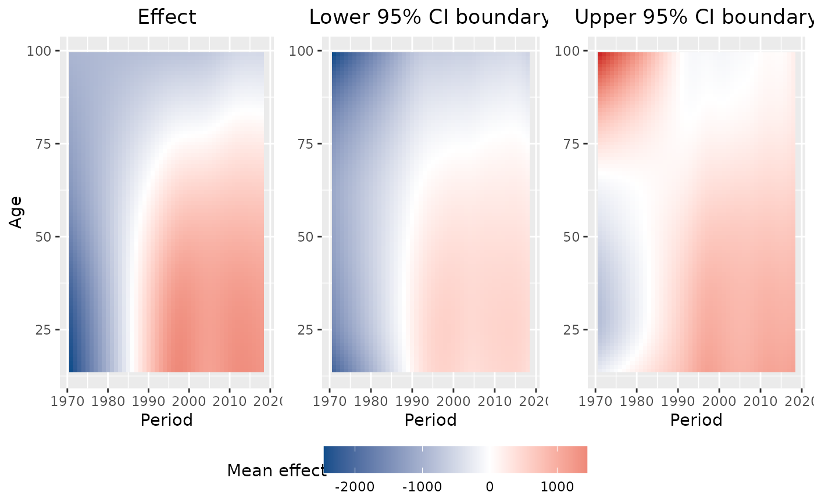
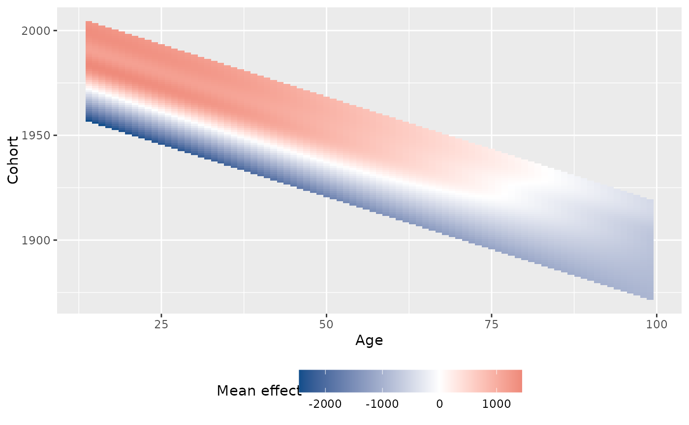
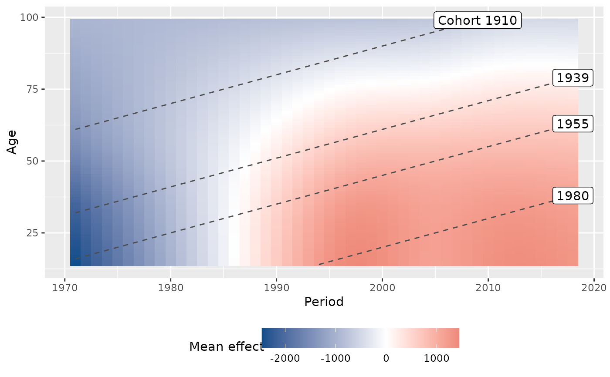

Heatmap of an APC surface
plot_APCheatmap.RdPlot the heatmap of an APC structure. The function can be used in two ways:
Either to plot the observed mean structure of a metric variable, by
specifying dat and the variable y_var, or by specifying
dat and the model object, to plot some mean structure
represented by an estimated two-dimensional tensor product surface. The model
must be estimated with gam.
Arguments
- dat
Dataset with columns
periodandage. Ify_varis specified, the dataset must contain the respective column. Ifmodelis specified, the dataset must have been used for model estimation withgam.- y_var
Optional character name of a metric variable to be plotted.
- model
Optional regression model estimated with
gamto estimate a smoothed APC surface. Only used ify_varis not specified.- dimensions
Character vector specifying the two APC dimensions that should be visualized along the x-axis and y-axis. Defaults to
c("period","age").- apc_range
Optional list with one or multiple elements with names
"age","period","cohort"to filter the data. Each element should contain a numeric vector of values for the respective variable that should be kept in the data. All other values are deleted.- bin_heatmap, bin_heatmapGrid_list
bin_heatmapindicates if the heatmap surface should be binned. Defaults to TRUE. If TRUE, the binning grid borders are defined bybin_heatmapGrid_list. This is a list with each element a numeric vector and a name out ofc("age","period","cohort"). Can maximally have three elements. Defaults to NULL, where the heatmap is binned in 5 year steps along the x-axis and the y-axis.- markLines_list
Optional list that can be used to highlight the borders of specific age groups, time intervals or cohorts. Each element must be a numeric vector of values where horizontal, vertical or diagonal lines should be drawn (depends on which APC dimension is displayed on which axis). The list can maximally have three elements and must have names out of
c("age","period","cohort").- markLines_displayLabels
Optional character vector defining for which dimensions the lines defined through
markLines_listshould be marked by a respective label. The vector should be a subset ofc("age","period","cohort"), or NULL to suppress all labels. Defaults toc("age","period","cohort").- y_var_logScale
Indicator if
y_varshould be log10 transformed. Only used ify_varis specified. Defaults to FALSE.- plot_CI
Indicator if the confidence intervals should be plotted. Only used if
y_varis not specified. Defaults to TRUE.
Value
Plot grid created with ggarrange.
Details
See also plot_APChexamap to plot a hexagonal heatmap with
adapted axes.
If the plot is created based on the model object and the model was
estimated with a log or logit link, the function automatically performs an
exponential transformation of the effect.
References
Weigert, M., Bauer, A., Gernert, J., Karl, M., Nalmpatian, A., Küchenhoff, H., and Schmude, J. (2021). Semiparametric APC analysis of destination choice patterns: Using generalized additive models to quantify the impact of age, period, and cohort on travel distances. Tourism Economics. doi:10.1177/1354816620987198.
Author
Alexander Bauer alexander.bauer@stat.uni-muenchen.de, Maximilian Weigert maximilian.weigert@stat.uni-muenchen.de
Examples
library(APCtools)
library(mgcv)
data(travel)
# variant A: plot observed mean structures
# observed heatmap
plot_APCheatmap(dat = travel, y_var = "mainTrip_distance",
bin_heatmap = FALSE, y_var_logScale = TRUE)
# with binning
plot_APCheatmap(dat = travel, y_var = "mainTrip_distance",
bin_heatmap = TRUE, y_var_logScale = TRUE)
# variant B: plot some smoothed, estimated mean structure
model <- gam(mainTrip_distance ~ te(age, period) + residence_region +
household_size + s(household_income), data = travel)
# plot the smooth tensor product surface
plot_APCheatmap(dat = travel, model = model, bin_heatmap = FALSE, plot_CI = FALSE)
# ... same plot including the confidence intervals
plot_APCheatmap(dat = travel, model = model, bin_heatmap = FALSE)

# the APC dimensions can be flexibly assigned to the x-axis and y-axis
plot_APCheatmap(dat = travel, model = model, dimensions = c("age","cohort"),
bin_heatmap = FALSE, plot_CI = FALSE)

# add some reference lines
plot_APCheatmap(dat = travel, model = model, bin_heatmap = FALSE, plot_CI = FALSE,
markLines_list = list(cohort = c(1910,1939,1955,1980)))

# default binning of the tensor product surface in 5-year-blocks
plot_APCheatmap(dat = travel, model = model, plot_CI = FALSE)
# manual binning
manual_binning <- list(period = seq(min(travel$period, na.rm = TRUE) - 1,
max(travel$period, na.rm = TRUE), by = 5),
cohort = seq(min(travel$period - travel$age, na.rm = TRUE) - 1,
max(travel$period - travel$age, na.rm = TRUE), by = 10))
plot_APCheatmap(dat = travel, model = model, plot_CI = FALSE,
bin_heatmapGrid_list = manual_binning)